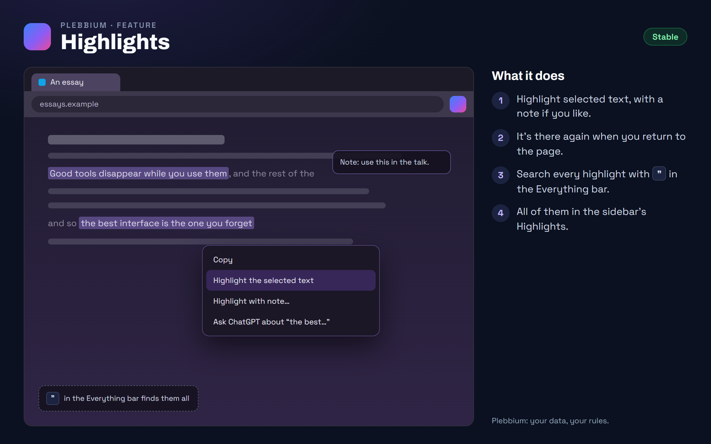

All features › Shipped › Highlights
Highlights
Stablesince 3604Select text on any page and highlight it, with a note if you like. The highlight is there again when you come back, and every highlight is searchable from the Everything bar.

How to use it
- Select text, right-click › Highlight the selected text, or Highlight with note….
- Come back to the page: your highlights are there.
- Find them: " in the Everything bar, or Highlights in the sidebar.
When it arrived
156.0.8078.360418 Oct 2026 · Beta and Stable
Highlights.
Why it works this way
Kept on your computer
Highlights are kept by Pleb's service on your own computer, beside your reading history, not in a cloud.
A page sees only its own
A page can only ask for the highlights on that page, for its own tab.